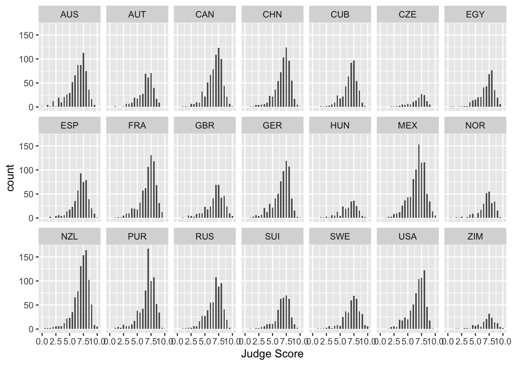
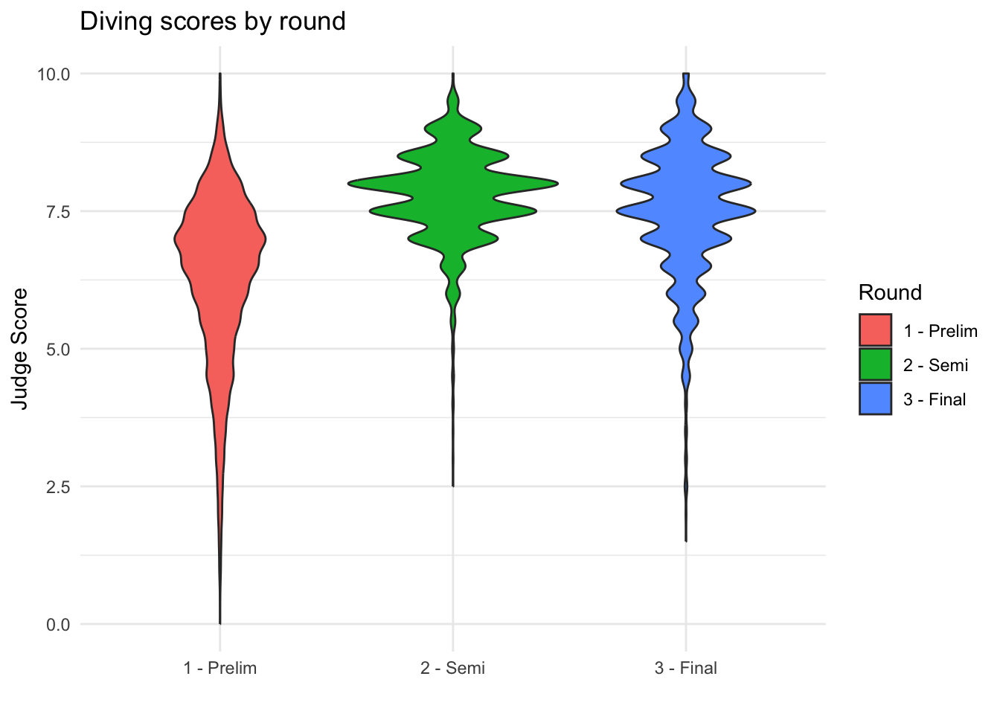
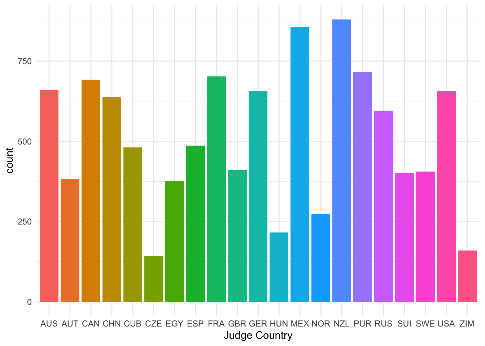
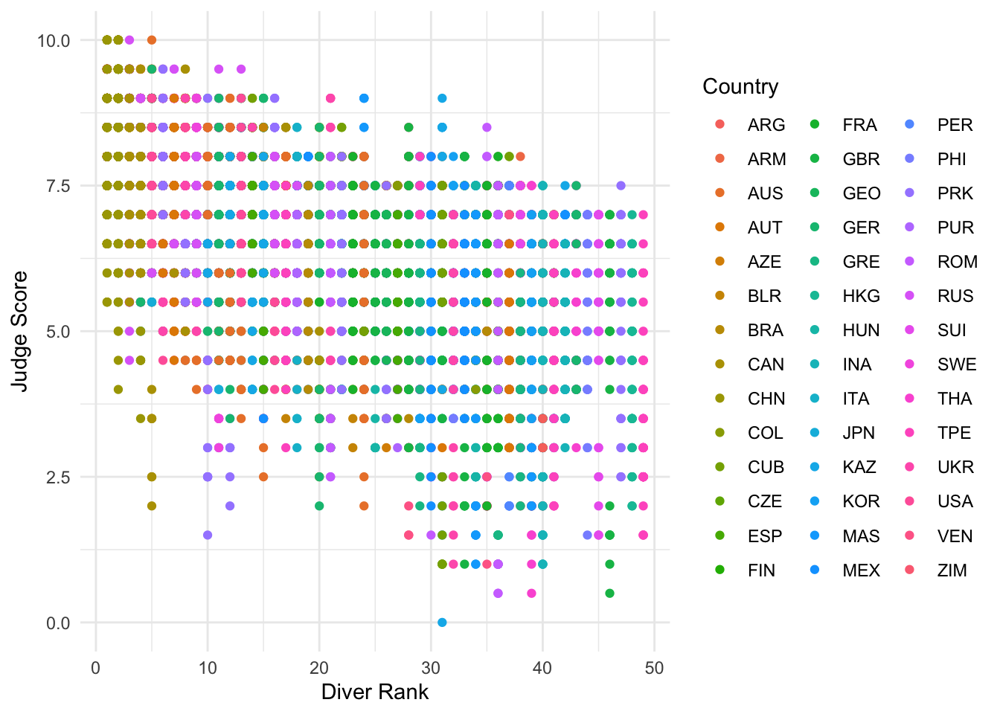
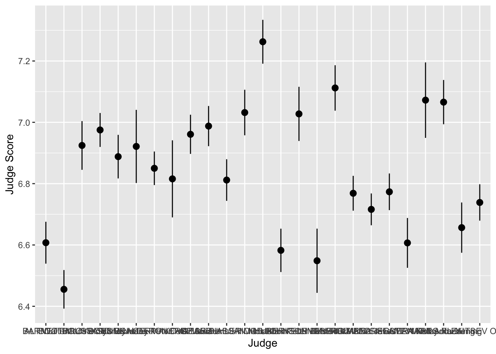
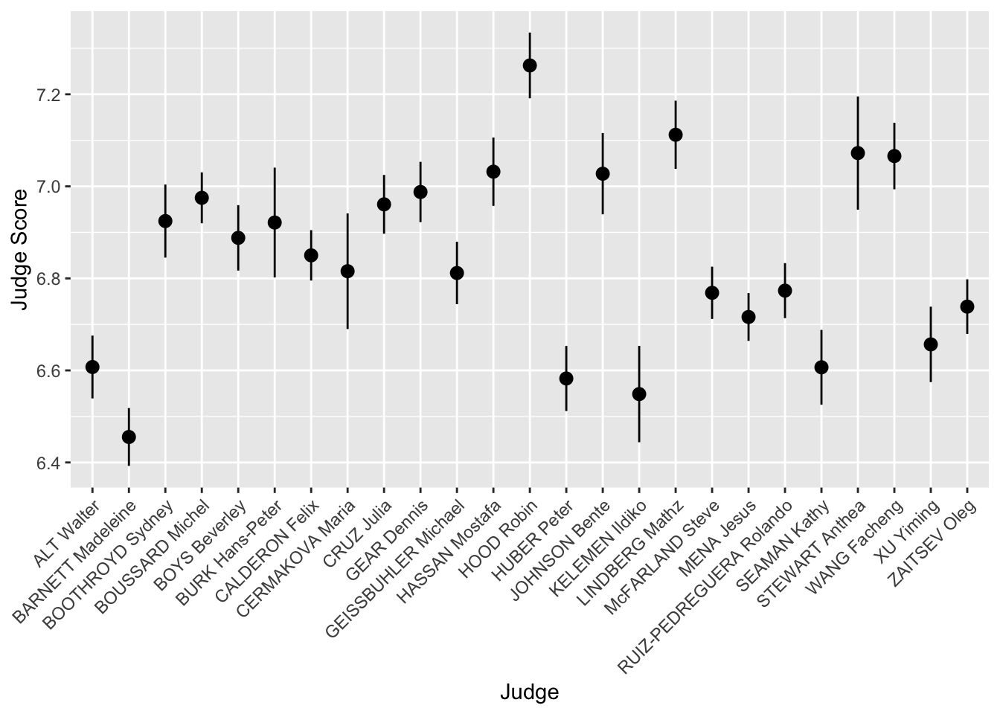
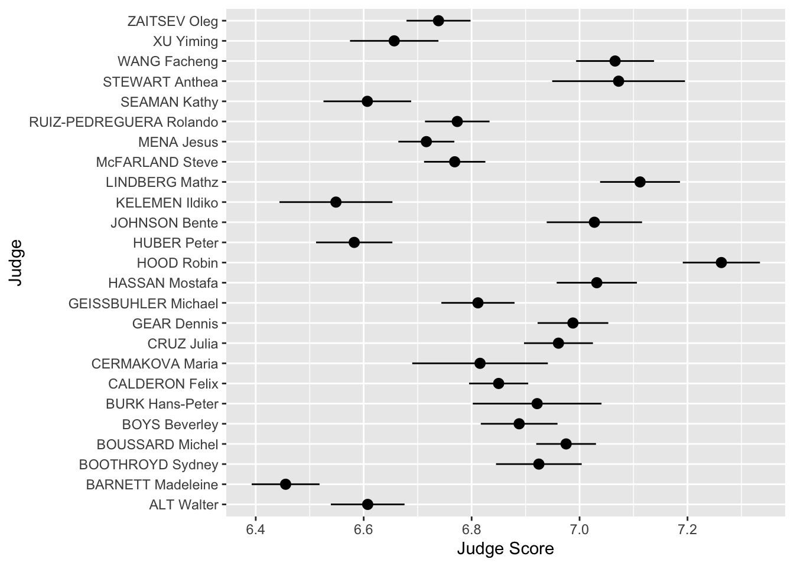
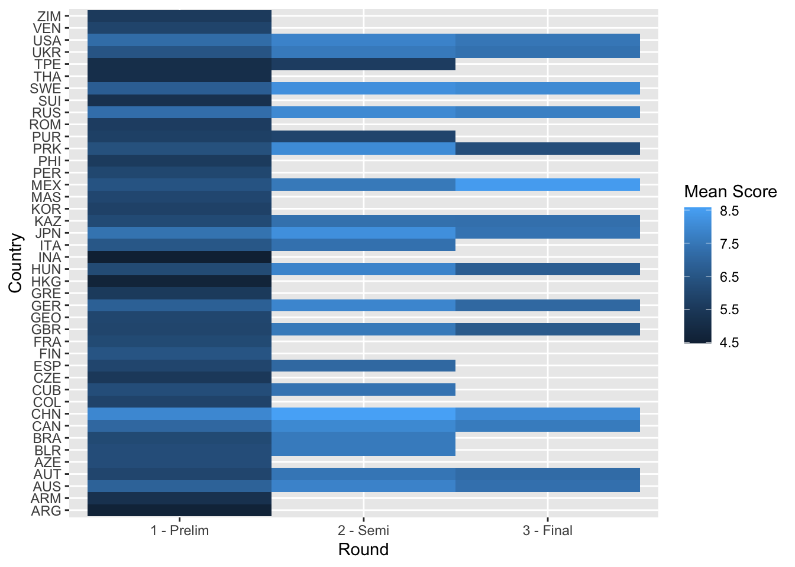

Lecture 4: Advanced Data Visualization
Visualizing the Diving Dataset
We introduced ggplot2 in Lecture 2 and used it again in Lecture 3 when combining raw data with summarized layers. Here we will keep building on that same workflow, using the diving dataset to add facets, boxplots, violin plots, barplots, and statistical summary layers.
Download diving.csv and save it to your
data folder.
A Quick Recap
We have already been writing ggplot code directly in earlier lectures. Here, we will start by saving the base plot to an object so that we can keep adding layers to it.
Recall that aesthetics map variables to visual properties of the plot. Examples include:
x: the variable that will be on the x-axisy: the variable that will be on the y-axiscolor: the variable that categorizes data by colorfill: the variable that controls filled regionsshape: the variable that categorizes data by shape
You can define the aes() in the ggplot()
call, which will then be used for later layers, or you can define the
aes() inside a specific geom() when it only
applies there. Geometric objects, or geoms, determine what
gets drawn. We have already used geom_histogram(),
geom_point(), and geom_line(). In this
lecture, we will add a few more:
geom_boxplot(): creates a boxplotgeom_violin(): creates a violin plotgeom_bar(): creates a bar plot
Putting it All Together
Let’s make a histogram of judges’ scores.

In the code above, we first overwrote diving_hist so
that it is now a histogram of judges’ scores where each bin has width
0.25. In the second line, we asked R to display this object. For ggplot
code, place the + at the end of a line, just like the pipe
%>%.
Notice that the label for the x-axis is JScore, which is the column name from the tbl. We can change the label by adding a layer.

Facets
What if we want to separate the judges’ scores by country? We can use
facets. Facets allow you to separate graphs by category. We do
not need to redo our code for the histogram; we only need to add a
facet layer to our graph diving_hist. The first
argument of facet_wrap() is the column of our dataset that
contains the category information. The second argument of
facet_wrap() specifies the number of rows in which to
display the graphs.

To get a sense of whether a particular country’s judges are biased,
it would be useful to add a reference line at the median score over all
judges and countries to each facet. So, we must first calculate the
overall median score, which we can do using the reframe()
function. Then, we can display this median on our plots with
geom_vline(), which adds a vertical line. We can also pass
in a custom color argument to this line so that it will easily stand out
from the rest of our values. This website provides a look at all the
built-in color arguments in R: R
colors
median_score <- diving %>%
reframe(med = median(JScore)) %>%
pull(med)
diving_hist <-
diving_hist +
geom_vline(xintercept = median_score, color = "lightcoral")
diving_hist
Note that when calculating our median_score, the
reframe function returns a tbl rather than a single value.
To “pull” out the single median value from our tbl, we use the
pull function.
Boxplots and violin plots
Boxplots are also an important visualization tool. We now create
boxplots of the judges’ scores, separated by diving round. We can also
color our boxplots according to the Round variable by
including the fill argument within the aes()
function. Note that if we included the fill argument
outside of the aes() function, we would only be able to
color all boxplots the same color (by putting fill inside
of the aesthetic, we are able to “map” the variable Round
to the fill color of the plot based on the values of
Round).
diving_box <- ggplot(data = diving) +
geom_boxplot(aes(x = Round, y = JScore, fill = Round)) +
labs(title = "Diving scores by round", x = "", y = "Judge Score", fill = "Round")
diving_box
We can also remove the unnecessary x-axis ticks and labels as the
legend on the right is sufficient. We do so using the theme
layer:
diving_box <- diving_box +
theme(axis.title.x = element_blank(), axis.text.x = element_blank(), axis.ticks.x = element_blank())
diving_box
We can also plot this data as violin plots, which take the same
arguments as geom_boxplot() but use
geom_violin() instead. We can also change the “look” of our
plots by setting the theme. theme_minimal() is frequently
used for a much cleaner look.
diving_violin <- ggplot(data = diving) +
geom_violin(aes(x = Round, y = JScore, fill = Round)) +
labs(title = "Diving scores by round", x = "", y = "Judge Score", fill = "Round") +
theme_minimal()
diving_violin
We can see that the boxplots provide more information about statistical features, such as the median and quartiles, but the violin plots provide a better sense of how the data is distributed. We can see the effect of smaller rounds having more binned scores, whereas they are spread much more evenly in the first round.
Barplots
We can also create barplots using geom_bar. By mapping
fill=JCountry inside our aes(), we can map
each bar’s color to the country for that judge.
bar <- ggplot(data = diving) +
geom_bar(aes(x = JCountry, fill = JCountry)) +
labs(x = "Judge Country") +
theme_minimal() +
theme(legend.position = "none")
bar
Scatterplots
Now let’s turn back to scatterplots, which were introduced in Lecture 2. We plot judges’ score versus rank of the diver. As we expect, divers with better (lower-numbered) ranks tend to receive higher scores.
scatter_raw = ggplot(data = diving) +
geom_point(aes(x = Rank, y = JScore, color = Country)) +
labs(x = "Diver Rank", y = "Judge Score") +
theme_minimal()
scatter_raw
We can see that this plot is a little messy and hard to interpret, which may commonly happen with scatterplots when multiple rows correspond to the same thing, such as a diver. We can improve on this visual by grouping per diver and usingreframe() to calculate the
mean of the judge scores, ranks, and difficulties for each diver. We
also want to save the country for visualizations, so we use the
first() command within reframe().
diving_grouped <- diving %>%
group_by(Diver) %>%
reframe(JScore_mean = mean(JScore),
Rank_mean = mean(Rank),
Difficulty_mean = mean(Difficulty),
Country = first(Country))
head(diving_grouped) ## # A tibble: 6 × 5
## Diver JScore_mean Rank_mean Difficulty_mean Country
## <chr> <dbl> <dbl> <dbl> <chr>
## 1 ABALLI Jesus-Iory 6.61 22 3.08 CUB
## 2 AHRENS Stefan 7.29 10.6 2.74 GER
## 3 AKHMETBEKOV Damir 4.32 41 2.95 KAZ
## 4 ALCALA Maria-Jose 5.53 30 2.84 MEX
## 5 ALEKSEEVA Svetlana 6.87 16 2.37 BLR
## 6 ALLY Tony 6.92 11.3 2.79 GBRThis will allow us to plot a single point per diver, which will make the plot much easier to interpret.
scatter = ggplot(data = diving_grouped) +
geom_point(aes(x = Rank_mean, y = JScore_mean, color = Country), size = 2) +
labs(x = "Diver Rank", y = "Judge Score") +
theme_minimal()
scatter We can see here the much clearer negative relationship between judge
score and diver rank.
We can see here the much clearer negative relationship between judge
score and diver rank.
Lines
We can also add an abline to our scatterplot–that is, a
line where we specify the y-intercept (intercept) and the
slope (slope):

Note: geom_abline is different from
geom_line: geom_line “connects the dots”
between your data and so doesn’t have to be a straight line, whereas
geom_abline draws a straight line with the specified slope
and y-intercept. A common usage is to add a visual reference line to a
scatterplot.
Other geom for lines are:
geom_vline: to add a vertical line to a plotgeom_hline: to add a horizontal line to a plot
Stats
We can also specify a layer using stat_, which stands
for statistical transformation. This is useful if we want to plot a
summary statistic of our data, such as a mean or median. By using a
stat_ layer, we do not have to compute this summary
statistic beforehand–ggplot will compute the summary
statistic for us and then plot the result.
For example, suppose we want to plot the means of each judge’s score
and provide error bars of one standard error on either side of the mean.
We could use reframe and group_by to find the
mean and standard errors for each judge, or we could just use a
stat_ layer!
The layer stat_summary() computes and then plots a
user-specified summary statistic. We choose the option
mean_se to calculate the means and standard errors of the
scores of each judge.
As always, we set up the plot by calling ggplot,
specifying data = diving and then providing the
aes. In this case, we want the judge on the
x-axis and their scores on the y-axis. We then
add our stat_summary layer.
judges <- ggplot(data = diving, aes(x = Judge, y = JScore)) +
stat_summary(fun.data = mean_se) +
labs(y = "Judge Score")
judges
We can see that the judges’ names are bunched together… we can make
them much more readable by rotating the x-axis labels by 45 degrees
using the theme layer:

We can also completely flip the coordinates to make a horizontal plot!

Heat Maps and Plot Annotations
When both axes are quantitative, it can be useful to divide the plane
into rectangular bins and summarize a third variable within each bin.
The function stat_summary_2d() does that automatically.
Here, we divide the plot of average diver rank and average dive
difficulty into rectangular bins and compute the mean judge score within
each bin. The function scale_fill_distiller() lets us
control the fill colors and legend title, and annotate()
lets us draw reference shapes on top of the plot.
ggplot(diving_grouped, aes(x = Rank_mean, y = Difficulty_mean, z = JScore_mean)) +
stat_summary_2d() +
scale_fill_distiller("Mean score", palette = "RdBu") +
annotate("rect", xmin = 5, xmax = 15, ymin = 2.5, ymax = 3.2,
alpha = 0, color = "black") +
labs(x = "Average Rank", y = "Average Difficulty")
If your data are already summarized into a rectangular grid,
geom_tile() is a direct way to build a heat map.
diving_tile <- diving %>%
group_by(Round, Country) %>%
reframe(mean_score = mean(JScore))
ggplot(diving_tile, aes(x = Round, y = Country, fill = mean_score)) +
geom_tile() +
labs(x = "Round", y = "Country", fill = "Mean Score")
Scales and 2D Histograms
We already used scale_fill_distiller() to control the
fill colors in a heat map. We can also use scales to control point
colors. We return to the scatter plot of the judges’ scores vs rank of
the divers. This time, we want to color the points by the difficulty of
the dive.
We use the layer scale_color_distiller(). The second
word, color, is the aes we want to change. We
can replace it with x, y or fill,
depending on the aes we want to change.
The third word is distiller, which we use because our
color variable, Difficulty, is continuous. If
it were discrete, we would write brewer instead.
scatter <- ggplot(data = diving_grouped) +
geom_point(aes(x = Rank_mean, y = JScore_mean, color = Difficulty_mean)) +
scale_color_distiller(palette = "OrRd", direction = 1)
scatter
Interestingly, it seems that some of the highest ranked divers perform most of the less difficult dives, but perform these easy dives very well.
To further investigate, we plot a 2D histogram of Rank vs Difficulty.
hist <- ggplot(data = diving) +
geom_bin2d(aes(x = Rank, y = Difficulty), bins = 10) +
scale_fill_distiller(palette = "Spectral")
hist
Note that we use fill instead of color in
scale_fill_distiller() to control the fill of the histogram
bins.
From the 2D histogram, we can see that the higher ranked divers attempt both more difficult and less difficult dives, unlike the lower ranked divers who only attempt more difficult dives.